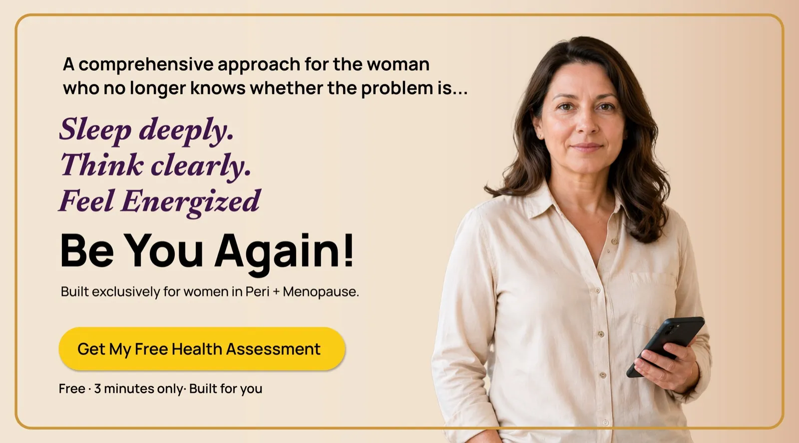

Get your sleep, your energy, your focus, and your spark back.Be you again!
Science-backed guidance and 24/7 support for the years when your body changes. Get clear answers about what is happening, and a plan to feel like yourself again. Start with a free 3-minute snapshot.
Free · 3 minutes · Your report emailed to you
What's been hardest lately?

- Evidence-based
- Built with experts
- Private & secure
- Free to start
- Made for women 35–65
“Finally, something that speaks to me like a woman — not a patient.”
“The tips and care I received completely transformed my sleep. The affirmations lifted my spirit, and the expert care gave me a path that actually works.”
Kate · Empress member“For years, I thought I was the only one dealing with brain fog and mood swings. Empress showed me I'm not alone — and gave me tools that actually help.”
Lauren · Empress member“The progress tracker gave me clarity. For the first time, I can see what's helping me and what's not.”
Rubins · Empress memberChoose your membership
Start free. Upgrade only if it's helping.
Free
For finding your footing
- 3-minute health assessment
- Your personal snapshot
- Weekly menopause science email
- Articles and community stories
Essential
- Unlimited Ask Empress, 24/7
- Full 15-minute Health Intelligence assessment
- Your Consult Report to bring to appointments
- Symptom tracking and two affirmations a week
- 10% off on Empress Naturals products
Premium
or $190/year — two months free
- Everything in Essential
- A 1:1 consultation with a menopause coach (15 minutes)
- 15% off on all Empress Naturals products
- A special gift from Empress Naturals when you join
- Community meet-ups and free seminars
“It's probably just stress.”
“You're too young for menopause.”
“Your labs came back normal.”
Dismissed once, then left to figure it out alone.
Perimenopause can begin years before your last period and touch almost every part of your life — sleep, memory, mood, weight, skin, hair, desire. Most women get a short appointment, a shrug, and a search bar. Empress was built for everything that happens after that.
Find out where you are →- Understand which of your symptoms are hormone-related — and which aren't
- Get practical steps for this week, not a 40-page PDF you'll never read
- Ask anything, at any hour, without feeling judged or rushed
- Walk into your next appointment with your history written down
- Track what's actually helping, so you stop repeating what isn't
Meet Ask Empress, your 24/7 companion
A conversation, not a search engine. Ask Empress is grounded in peer-reviewed menopause science and shaped by our experts, so the answer you get at 3 a.m. is the one you'd want in daylight.
- ✦Grounded in the evidenceAnswers drawn from published menopause research — not forums, not guesswork.
- ◷Awake when you areThe symptoms don't keep office hours. Neither does Empress.
- ♡Knows its limitsEmpress is guidance, not diagnosis. When something needs a clinician, it says so.
Three minutes today. A clearer year ahead.
No waiting rooms, no referral, no explaining yourself twice.
Take the assessment
Answer a few questions about your symptoms, stage and goals. Three minutes, in your own words.
Get your snapshot
See where you likely are in the transition, which symptoms cluster together, and what to try first.
Build momentum
Track what's working week by week, ask Empress anything in between, and adjust as your body does.
your appointment
The report your doctor wishes you'd bring
A short appointment is not enough time to reconstruct years of symptoms. Members take a fuller 15-minute Health Intelligence assessment — 120 health markers across 10 body systems, no blood draws — and Empress turns it into a clear, printable Consult Report: patterns, timeline, and the specific questions worth asking. Included with every membership.
Natural care for the changes hormones bring
Thinning hair, dryness, changing texture. Hormonal shifts often show up in your skin and hair first, so our shop starts there — with clean, naturally derived products chosen for this stage of life, not general anti-ageing marketing.
Clinicians, researchers and technologists — not a chatbot on its own
Our experts and advisors shape the guidance behind Empress: the questions we ask, the evidence we draw on, and the moments we tell you to see a doctor.
Menopause, in plain language
The mechanism behind the symptoms nobody warned you about.
The 2am Wake-Up: Why Women in Perimenopause Wake at This Exact Time
The cortisol and progesterone mechanism nobody explains.
Brain fogThe Neuroscience of Perimenopause Brain Fog
What's actually happening in your brain — and why most of it is reversible.
Low libidoYour Libido Did Not Disappear
It was redirected by four hormones nobody told you were changing.
Three minutes. Then you'll know where you stand.
Free, private, and built exclusively for this stage of your life.
Get my free health assessment →